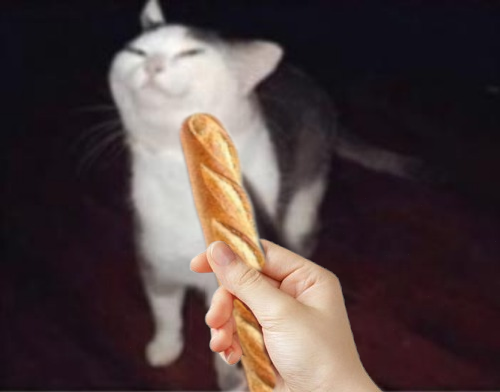
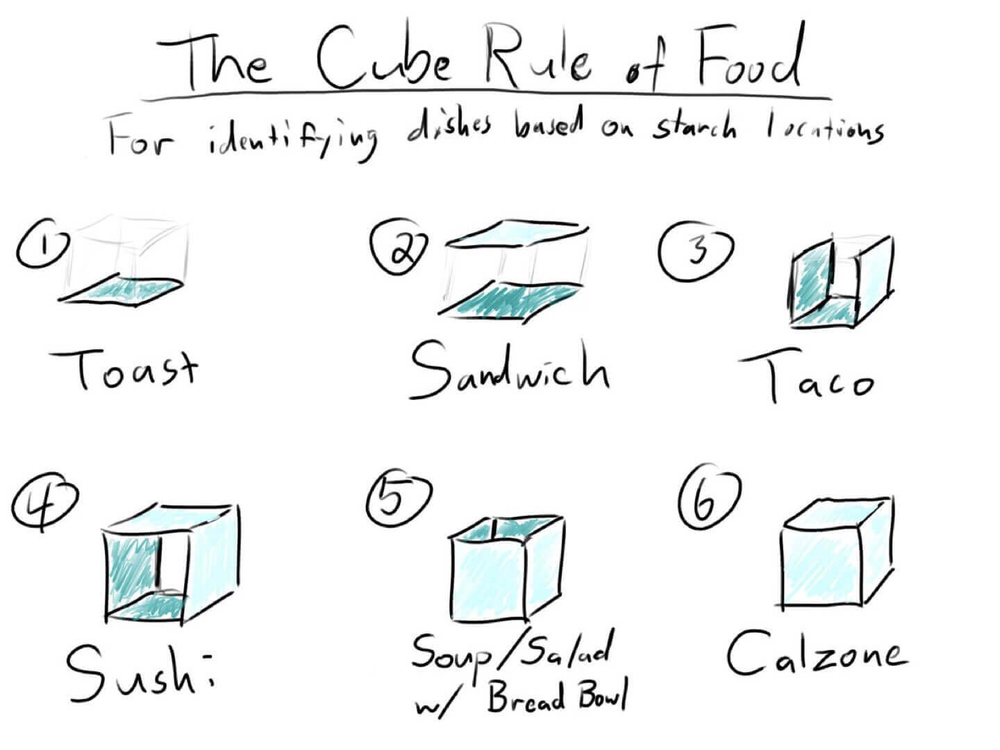

About Me

Information
Who?
I go by many names depending on what platform I'm using. But the most common one is Page.
I prefer using it since I'm not comfortable with telling my real name.
I'm 21 years old living in Finland. Currently studying cybersecurity at Laurea University of Applied Sciences.
Why bread?
It's a long story, I think it started in 2016. I was in one writing community and decided for fun make smaller community dedicated to bread.
It was a small cozy community where everyone knew each other. We discussed variety of things related to bread. We even had fun topics and events.
We would talk about what could be each bread type's orientation and what foods could be considered as what bread type.
For example pizza is toast because it's flat, has no sides unlike a taco, and you put toppings on it.
I was quite known too, I was given nickname and fan art was made of me. The whole 'bread personality' just stuck with me ever since.
Why did you make this website?
I made it because bread is one of my favorite things, and I've always wanted a website regarding it.
Besides I think that there should be a website dedicated to bread, so it would be easier to find information regarding it.
Miscellaneous
Fan art of me
Link to creator's account (opens in a new tab)
How to categorize bread
Link to site (opens in a new tab)Links
All bread related pictures are under Creative Commons licenses. Ones that are not known whether they are licensed under CC include links under the pictures.
Bread Recipes links (all open in a new tab):
Ciabatta Recipe Brioche Recipe Naan RecipeFocaccia Recipe was self-made
Github
Link to Github (open in a new tab)